Welcome to Camp Kidney — where the rules are strict, the fun is unstoppable, and one free-spirited monkey named Lazlo is about to change everything forever.
Created by Joe Murray — the same genius behind Rocko's Modern Life — Camp Lazlo is a beloved Cartoon Network animated series that ran from July 8, 2005 to March 27, 2008. It follows Lazlo, an endlessly optimistic Brazilian spider monkey who arrives at Camp Kidney and turns this regimented Boy Scout-like camp upside down.
The series is known for its quirky humor, bright cartoon style, and playful storytelling. Each episode usually features Lazlo and his cabin mates getting into silly problems around the camp, which often frustrates the strict and easily annoyed camp leader.
Set in the Pimpleback Mountains beside Leaky Lake, Camp Kidney is home to the Bean Scouts — a rowdy collection of anthropomorphic animals living in cabins named after beans. Across the lake at Acorn Flats sits the all-girls Squirrel Scouts, adding even more chaos to camp life.
With its retro Hanna-Barbera-inspired art style, sharp wit, and genuinely lovable characters, Camp Lazlo became a cultural touchstone of early 2000s Saturday morning cartoons.
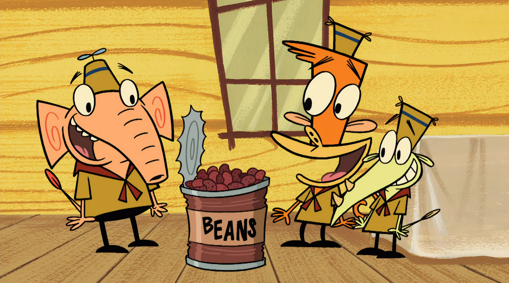
Premiere Date
2005
Episodes
61
Premiere Views
51M+
Awards
3
Characters
55
Seasons
5
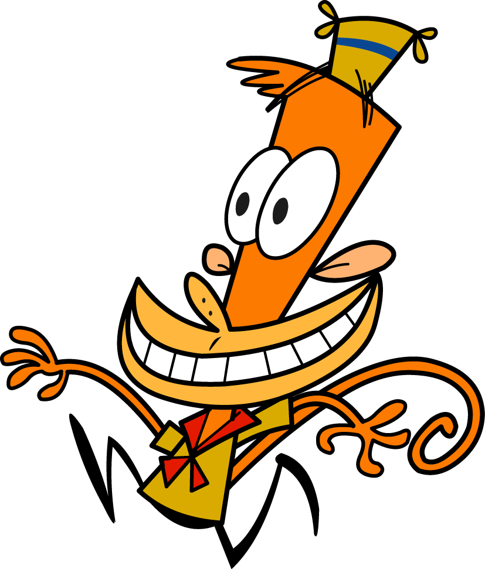
Species: Monkey
Lazlo is an optimistic and carefree spider monkey who loves having fun and often gets into silly adventures at camp.
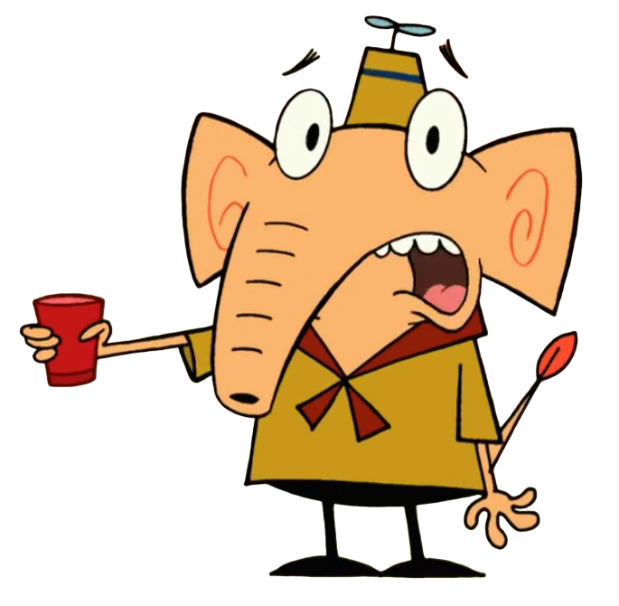
Species: Elephant
Gentle, polite Indian elephant, values manners and tradition, loyal friend to Lazlo, often cautious, respectful, and sometimes overwhelmed by chaos.
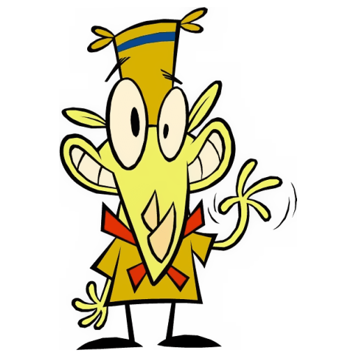
Species: Rhinocerous
Timid albino pygmy marmoset, nervous and anxious, depends on friends for courage, often worries excessively, yet remains loyal and surprisingly brave.
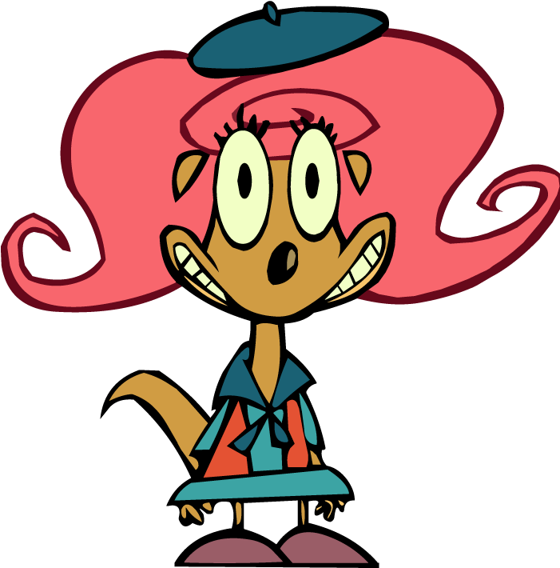
Species: Chipmunk
Energetic scoutmaster of Acorn Flats, cheerful, encouraging, supportive leader, balances Lumpus’s chaos, promotes teamwork, kindness, and positive camper development always.
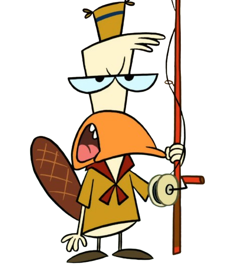
Species: Platypus
Grumpy, strict platypus camper, dislikes Lazlo’s carefree nature, values order, cleanliness, discipline, yet occasionally reveals hidden kindness beneath his tough exterior.
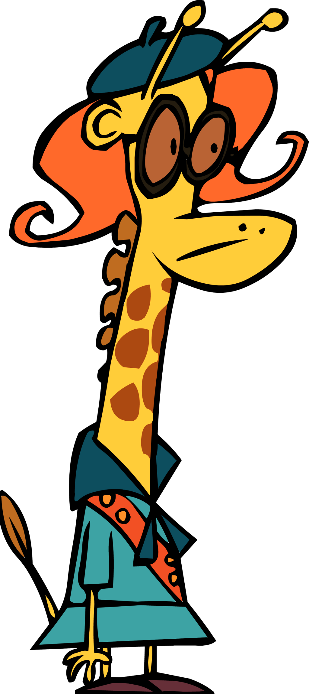
Species: Giraffe
Independent, confident giraffe scout, adventurous spirit, close friend of Lazlo, values fairness, enjoys challenges, often stands up for others bravely.
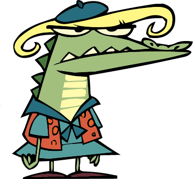
Species: Alligator
Smart, enthusiastic camper, passionate about science and learning, energetic, curious, loves experiments, eager to prove intelligence, sometimes overly intense but well-meaning.
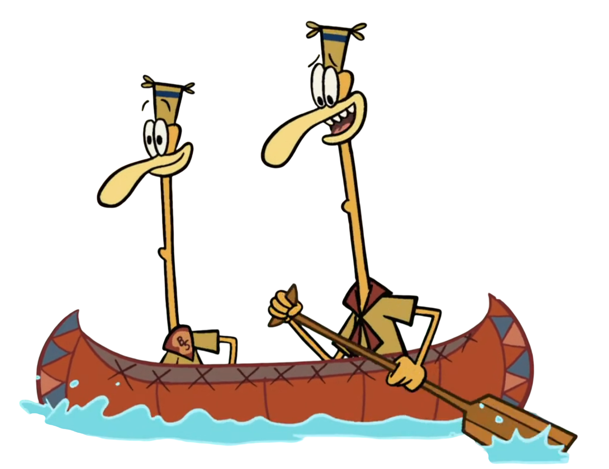
Species: Ostrich
Playful campers, enjoy games and activities, energetic personality, contributes to group fun, often participates enthusiastically in camp competitions and challenges.
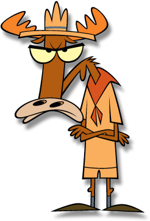
Species: Moose
Eccentric moose scoutmaster obsessed with rules, control, and recognition, often jealous of Lazlo, dramatic, loud, yet secretly craves appreciation and respect.
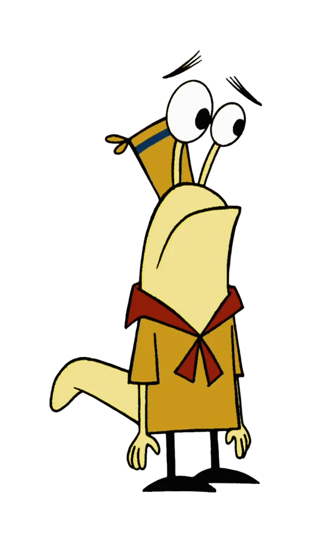
Species: Slug
Lazy, sarcastic assistant scoutmaster, avoids responsibility, loves relaxing, surprisingly wise occasionally, provides comic relief, indifferent attitude toward camp chaos and rules.
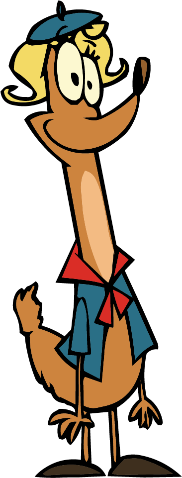
Species: Deer
Mysterious camper, quiet demeanor, often unnoticed, blends into background, occasionally surprises others with unexpected insights or hidden talents.
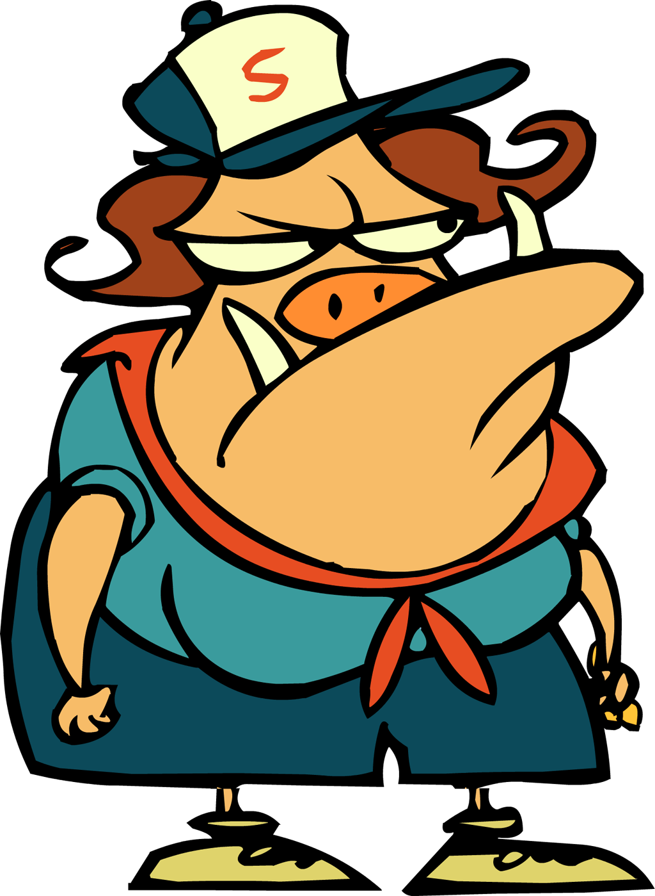
Species: Wharthog
Strict, no-nonsense nurse, enforces hygiene and rules, intimidating presence, cares deeply about campers’ health, though rarely expresses warmth openly.
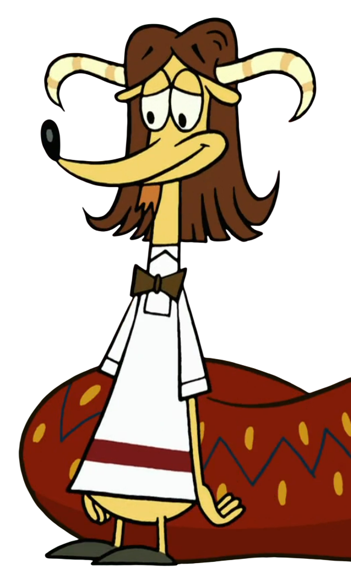
Species: Goat
Camp cook, prepares meals for campers, hardworking, sometimes overwhelmed, tries maintaining quality food despite chaos, contributes quietly to camp’s daily functioning.
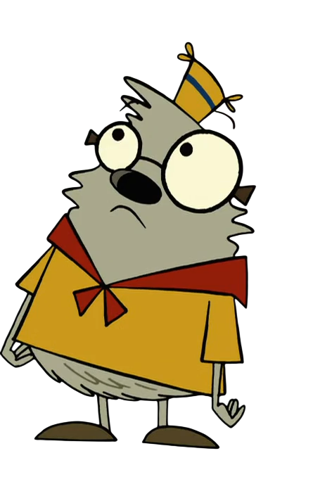
Species: Gunie Pig
Kind-hearted scout, supportive friend, follows Lazlo’s adventures, optimistic, cooperative, enjoys camp activities, contributes positively, though sometimes overshadowed by stronger personalities around.
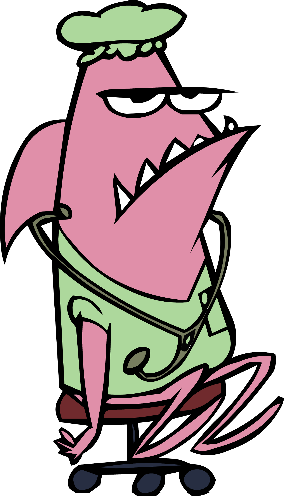
Species: Shark
A male pink nurse shark nown for being perpetually bored, drinking coffee, and never leaving his swivel stool.
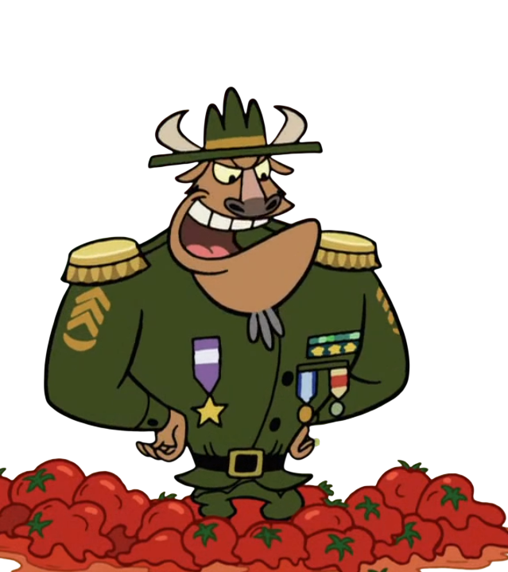
Species: Bull
Authoritative camp authority figure, enforces scouting standards, strict, serious demeanor, oversees operations, expects discipline, often clashes with Lumpus’s incompetence.
Season 1 - Episode 1
Scoutmaster Lumpus, a moose, tries to hook a fish in Leaky Lake, all the while trying to keep Lazlo, Raj, and Clam, otherwise known as the Jelly Bean trio, as far away as possible.
Read MoreSeason 1 - Episode 2
The Squirrel Scouts suspect Lazlo and the Jelly Beans are aliens from another planet, and so they kidnap them for some genuine alien interrogation.
Read MoreSeason 1 - Episode 3
The Jelly Beans befriend a checkered garter snake, which they name Snakey, and their new friend gets loose around Camp Kidney.
Read MoreSeason 1 - Episode 4
The campers of Camp Kidney compete in a soap box derby, with Slinkman at the wheel of the Jelly Beans' entry into the racing course.
Read MoreSeason 1 - Episode 5
Lazlo tries to help Raj overcome his aquaphobia, so Raj can pass his swimming test, and swim with them during summer.
Read MoreSeason 1 - Episode 6
Lazlo comes out of Leaky Lake and a sea lamprey is attached on his head. Lazlo attempts to have fun with Lamar (the sea lamprey) until it sucks away Lazlo's blood.
Read More